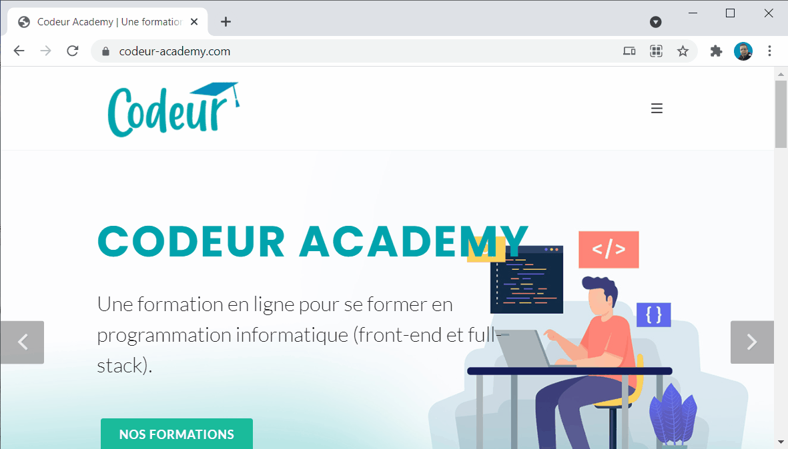
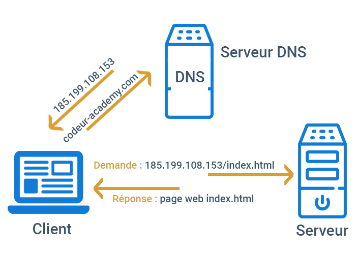

Comment fonctionne le Web ?
Dans cette session de formation nous allons découvrir ce que se passe quand on affiche une page web.
Extrait de la formation vidéo
Communication client serveur
Sur internet, l’affichage d’une page web nécessite l’intervention de deux machine. La machîne A qui affiche la page Web et la machine B qui serve la page à la machîne A.

Dans cette communication, on dit que la machîne A est le client et la machîne B est le serveur. on parle ici d’une communication client-serveur.
Dans la machine A, le navigateur joue le rôle de client, et dans la machîne B, une application dit serveur web joue le rôle de serveur.

Adresse IP
Chaque machine dans le réseaux internet est identifié par une adresse IP. Par exemple la machine A: est identifier par l’adresse : 192.168.1.19 et la machine B par l’adresse : 185.199.108.153

Nom de domaine
Pour consulter la première page web de notre site internet, nous avons utilisé le nom codeur-academy.com. Ce nom s’appelle nom de domaine.

Ce nom permet de situer le serveur sur internet grâce à un équipement, appelé DNS (Domain Name System) qui permet d’associer une adresse IP un nom de domaine.
Les noms de domaine ont été conçus pour simplifier l’utilisation de l’internet : il est plus facile de retenir et taper un nom de domaine qu’une adresse IP.
Pour récupérer l’adresse IP de notre serveur Web, vous pouvez utiliser la commande ping sur la console.
1
2
3
4
5
6
PS C:\Users\essarraj> ping codeur-academy.com
Envoi d’une requête 'ping' sur codeur-academy.com [185.199.108.153] :
Réponse de 185.199.108.153 : octets=32 temps=114 ms TTL=52
Réponse de 185.199.108.153 : octets=32 temps=82 ms TTL=52
Protocole de communication
Pour communique deux ordinateur sur internet nous avons besoin d’un protocole de communication. Il définisse le language et les règles de communication entre le client et le serveur.
Un exemple d’un protocole de communication dans notre vie réel est le code de la route. c’est un ensemble des règles relatif à l’utilisation des voies publiques.
Par exemple, un carrefour est commandé par un contrôleur de feux, appareil électronique de contrôle/commande. Les feux sont généralement déclinés à partir de deux couleurs de base : le rouge pour fermer, le vert pour ouvrir. Le jaune-orangé est également utilisé et sert à signaler le passage du feu vert au feu rouge.

Pour la consultation de la page web, les deux ordinateur A et B ont utilisé le protocule http que nous allons découvrir dans cette session de formation.
Numéro de Port
Dans un réseau nous pouvons installer plusieurs application serveur comme le serveur Web, en utilisant un seul adresse IP. Pour que cela soit possible, la notion de Port est inventé. Comme ça, pour demander le service web dans la machîne B nous devons déterminer le numéro du port de service Web qui prend la valeur par défaut : 80.
Par exemple, pour consulter, la page d’accueil de site web google.com, nous devons déterminer le numéro du port qui prend la valeur par défaut 80 en cas d’absence du numéro de port.

Échange des ressources
Une ressource du World Wide Web est une entité informatique (texte, image, vidéo, fichier PDF, ..).
Le client et le serveur peuvent s’échanger ces ressources. Dans la plupart des cas ces échanges ne sont pas “symétriques” : en effet le client va souvent se contenter de demander des ressources (fichiers contenant du texte, photos, vidéos, sons…) à l’ordinateur serveur.
Le serveur va contenter de fournir les ressources demandés à tous les ordinateurs client qui ont fait la demande.
Protocole - HTTP
HTTP (pour HyperText Transfer Protocol) est le protocole de communication utilisé pour transférer les ressources du Web.
Chaque ressource fait l’objet d’un échange demande/réponse entre le client et le serveur.

En HTTP, la communication tourne autour d’un concept appelé requête-réponse. Le client envoie au serveur une requête pour faire quelque chose et le serveur envoie en retour une réponse au client disant si oui ou non il est en mesure de faire ce que le client lui demande.
HTTPS est la combinaison du HTTP avec une couche de chiffrement. Il permet au visiteur de vérifier l’identité du site web auquel il accède, grâce à un certificat d’authentification
URL - adresse web
Une URL (pour Uniform Resource Locator) est une chaîne de caractères décrivant l’emplacement d’une ressource.
Elle contient généralement dans l’ordre :
- le nom du protocole,
- un deux-points (:),
- deux barres obliques (//),
- un nom d’hôte,
- une barre oblique (/),
- et un chemin composé de texte séparés par des barres obliques.
1
https://codeur-academy.com/index.html
Comment fonctionne le Web
Lorsque vous saisissez une adresse web dans votre navigateur :
- le navigateur demande l’adresse IP à un serveur spécial nommé “DNS”.
- le navigateur envoie une requête HTTP au serveur pour lui demander d’envoyer une copie du site web au client. Ce message, et les autres données envoyées entre le client et le serveur, sont échangés par l’intermédiaire de la connexion internet.
- si le serveur accepte la requête émise par le client, le serveur envoie un message « 200 OK » au client qui signifie : « Pas de problème, tu peux consulter ce site web, le voici ». Ensuite le serveur commence à envoyer les fichiers du site web au navigateur.
- le navigateur affiche la page web sur votre écran
